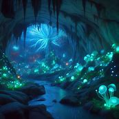
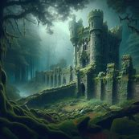

Aqui, você encontrará histórias emocionantes, dicas úteis e curiosidades fascinantes.
Vamos explorar juntos o mundo e descobrir lugares incríveis. Prepare-se para se inspirar e se divertir!
As cavernas de Eldoria são um verdadeiro tesouro escondido.
Com suas estalactites reluzentes e passagens misteriosas, elas oferecem uma experiência única para os aventureiros destemidos.
Imagem: 
As ruínas de Avalon são um portal para o passado.
Essas estruturas antigas guardam histórias de reis e rainhas, feiticeiros e dragões.
Em minha última expedição, descobri um pergaminho enigmático que pode revelar o segredo da imortalidade.
Será que estou prestes a desvendar o mistério?
Imagem: 